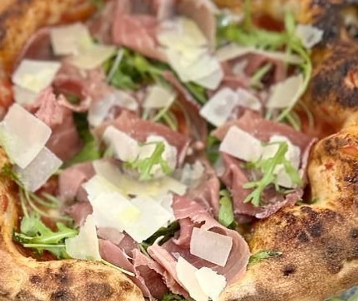
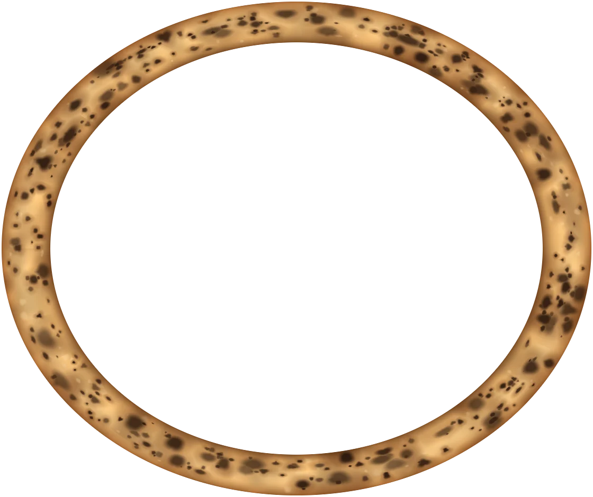
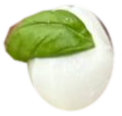

Ristorante · Pizzeria · Via Gonin 7
vieni a provare la Racchetta
La vera pizza napoletanalievitata 48 ore · forno a legna



Cornicione ripieno di ricotta
«Croccante fuori, soffice dentro… e con un cuore di ricotta»toccate il bocconcino
La vera pizza napoletana, con l'impasto lievitato 48 ore e cotta nel forno a legna. E una cucina di mare e di terra, dal pranzo alla cena.
Pranzo e cena; il martedì solo a pranzo
4,6 su Google · 298 recensioni9,1 su TheFork · 972 recensioni
(toccate il bocconcino)
«il cornicione alto e morbido»
La pizza
Lievitata 48 ore
Napoletana: l'impasto lievita 48 ore e la pizza cuoce nel forno a legna. Il cornicione è alto e morbido, e in alcune è ripieno di ricotta di bufala: nella Genuina e nel manico della Racchetta.
«pesce fresco ogni giorno»
Il pesce
Preparato al momento
Dalla pasta allo scoglio alla grigliata mista: il pesce arriva fresco ogni giorno e si cucina al momento.
«Tradizione e Passione»
La cucina
Carne selezionata
Primi e secondi della tradizione, gli antipasti di terra, la carne alla griglia: la costata di manzo frollata il tempo giusto, la tagliata, la grigliata mista.
«vi diamo il buongiorno»
A pranzo
Menù del giorno
A pranzo c'è il menù del giorno: una pausa gustosa, veloce e conveniente. Lo scrivono la mattina sui loro social, col buongiorno: «Dal Bocconcino vi diamo il buongiorno».
A pranzo sono aperti tutti i giorni, anche il martedì.
«ristrutturato di recente»
La sala
Sala privata
«Locale ristrutturato di recente, gestori giovani, gentili e simpatici.»
Oltre alla sala, una sala da pranzo privata per le cene di gruppo e le feste. Si mangia anche a casa: asporto, e consegna a domicilio pure su Just Eat e Deliveroo.
- Accessibile
- Aria condizionata
- Menu per bambini
- Piatti vegani
- Animali ammessi
- Wi-Fi
«cotte alla perfezione»
Dicono di noi
4,6 su Google
4,6 su Google · 298 recensioni9,1 su TheFork · 972 recensioni
-
«Prima volta oggi a pranzo e devo dire che le pizze (eravamo in 7) sono state tutte ottime! Cotte alla perfezione! Anche mia mamma che si lamenta sempre ovunque delle parti "bruciate" oggi ha fatto i complimenti al pizzaiolo! Tornerò sicuramente!»
Stefania File · su Google
-
«Accoglienza impeccabile, gentilezza e garbo aprono le porte del locale. Servizio rapido, nessun ritardo. Pizza magistrale, impasto leggerissimo, ottima la qualità delle materie prime utilizzate. Rapporto qualità prezzo buono. Torneremo sicuramente»
Un cliente su TheFork · 9,5/10 · settembre 2026
-
«Siamo venuti a Milano dalla Turchia per una vacanza di 7 giorni e abbiamo avuto l'opportunità di provare molte pizzerie in città. Tuttavia, la pizza con zucchine e 4 formaggi che abbiamo mangiato qui non ha avuto eguali in nessun altro […]»
Yasin Drn · su Google (tradotta)
-
«locale molto accogliente, personale cortese e disponibile. siamo venuti diverse volte, abbiamo mangiato la pizza che è super. forse la prox volta proveremo i primi piatti. consigliatissimo»
Un cliente su TheFork · 10/10 · settembre 2026
-
«Locale grazioso e ben curato. Personale gentile. Abbiamo mangiato la pizza ( in diverse varietà), gnocco fritto con affettati ( super!), sorbetto al limone […]»
Un cliente su TheFork · 10/10 · settembre 2026
Dalle recensioni su Google e su TheFork, come sono state scritte.
«vi aspettiamo»
Prenota
Martedì solo a pranzo
| Lunedì | 12–15 · 19–23 |
|---|---|
| Martedì | solo pranzo, 12–15 |
| Mercoledì | 12–15 · 19–23 |
| Giovedì | 12–15 · 19–23 |
| Venerdì | 12–15 · 19–23:30 |
| Sabato | 12–15 · 19–23 |
| Domenica | 12–15 · 19–23 |
- Indirizzo
- Via Francesco Gonin 7, 20147 Milano
- Zona
- Giambellino, a 150 metri da Piazza Tirana
- Metro
- M4 San Cristoforo, a circa 300 metri
- Telefono
- 388 347 0465
La mappa è di Google: aprendola, Google riceve il tuo indirizzo IP e può usare i suoi cookie.